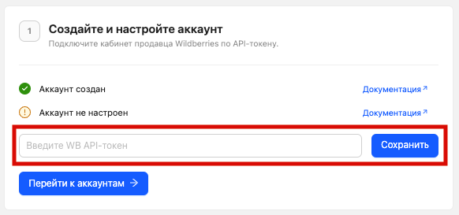
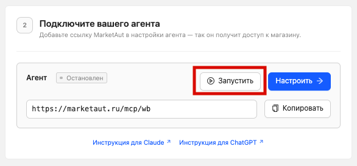
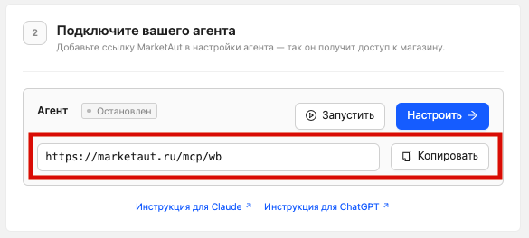

Домашняя страница
После регистрации и входа в MarketAut пользователь автоматически попадает на домашнюю страницу.
При регистрации платформа уже создаёт:
- один аккаунт Wildberries;
- одну диаграмму для подключения ИИ-агента.
Создавать их вручную для первоначальной настройки не нужно. Остаётся добавить API-токен Wildberries, запустить диаграмму и скопировать ссылку для подключения ИИ-агента.

Добавление API-токена Wildberries
Если у вас ещё нет API-токена, подробную инструкцию по его созданию и выбору категорий доступа см. в разделе Получение API-токена.
Вставьте API-токен Wildberries в поле Введите WB API-токен и нажмите Сохранить.

После сохранения токена аккаунт будет настроен, а соответствующие пункты отметятся зелёными галочками.
Запуск диаграммы
После сохранения API-токена в блоке Подключите вашего агента нажмите Запустить.

После запуска статус агента изменится на «Запущен».
Ссылка MCP
В этом же блоке отображается ссылка для подключения агента к MarketAut.
Нажмите Копировать, чтобы скопировать ссылку в буфер обмена.

Эта ссылка потребуется при подключении ChatGPT, Claude, Grok, QwenWork.
Что дальше?
После копирования ссылки перейдите в раздел Работа с ИИ и выберите ChatGPT или Claude. Дополнительные аккаунты и диаграммы при необходимости можно создать позже в соответствующих разделах платформы.